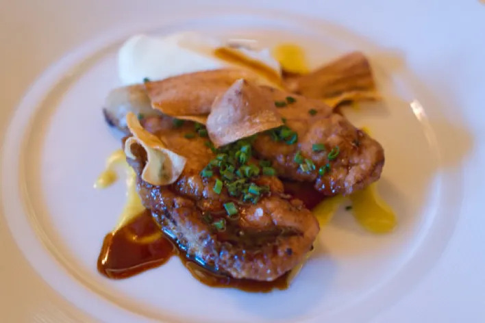

Alfredo Linguini-Gusteau

Linguini is the only son of celebrated chef Auguste Gusteau and Renata Linguini. Full of false modesty, he insists that he has no talent at all, and is no good with food or words. Once the drawcard of Gusteau’s restaurant, he now manages the front-of-house, and has been known to wait tables whilst wearing roller-skates.
Colette Tatou

The toughest cook in the kitchen, chef Tatou has worked long and hard to penetrate the cutthroat world of French haute cuisine, becoming the only female chef at Gusteau’s. She is a firm believer in Gusteau’s motto, “Anyone can cook”, and has committed all of his recipes to heart.
The Little Chef

The artist behind several of La Ratatouille’s signature dishes, The Little Chef prefers to remain unidentified, so that aspiring creators everywhere can imagine themselves in The Little Chef’s position, having risen from unbelievably humble origins. There are rumours that The Little Chef is actually the rat depicted by La Ratatouille’s signage, but customers can be sure that no two-dimensional black rats work at La Ratatouille, and our staff are fully compliant with all hygiene laws and health and safety regulations.